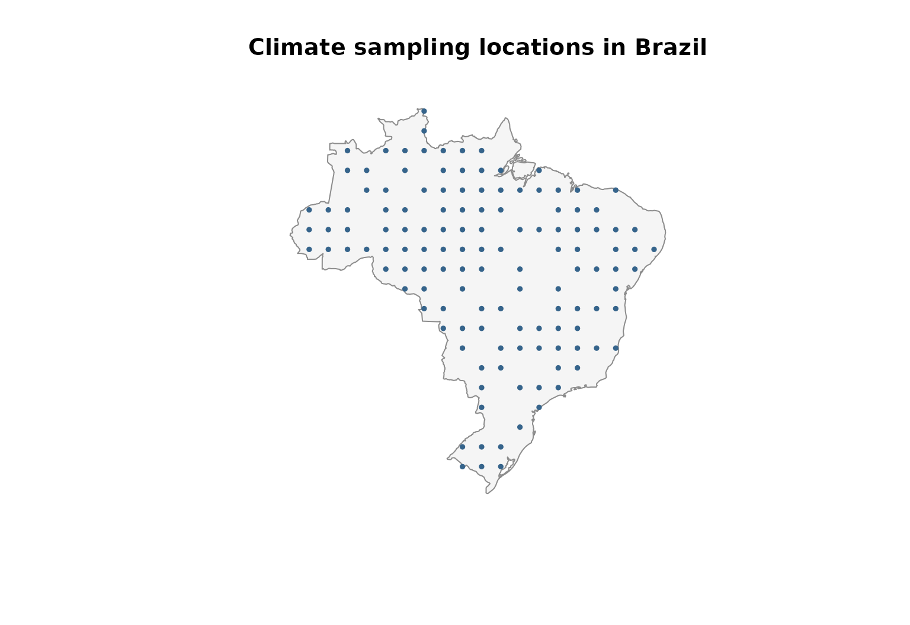
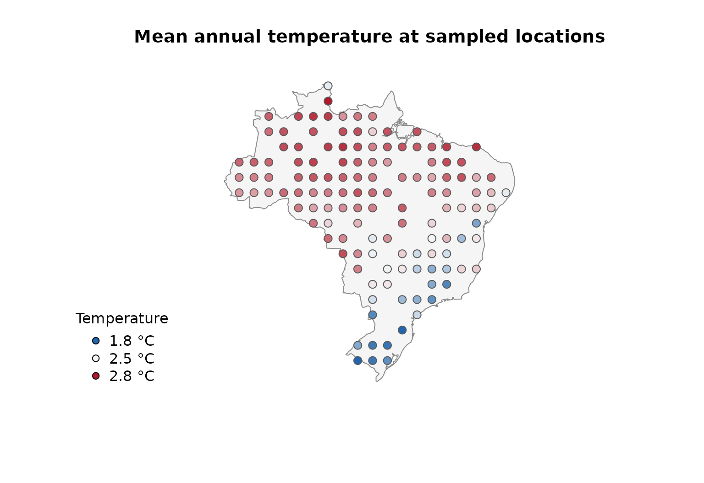
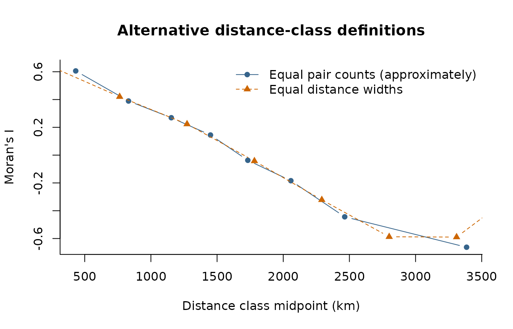
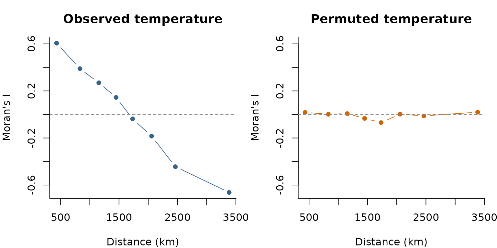

Exploring autocorrelation across distances with lets.correl()
Bruno Vilela
Source:vignettes/lets-correl.Rmd
lets-correl.RmdOverview
Autocorrelation describes whether observations linked by a distance or similarity relationship tend to have similar values. In macroecology, autocorrelation is most commonly examined in geographical space, but the underlying principle is not restricted to physical distance. For example, we may ask whether species separated by short phylogenetic distances have more similar trait values than distantly related species, or whether the values of an ecological response are similar in environmental space.
lets.correl() calculates Moran’s I over distance
classes, producing a correlogram rather than a single
statistic. Its argument y is a square pairwise distance
matrix. The function does not use geographic coordinates internally and
can therefore be applied to geographical, phylogenetic, environmental,
functional, or other suitably defined distances.
This vignette uses mean annual temperature from the temp
dataset shipped with letsR. Locations are sampled within Brazil, and
geographic distances are calculated with lets.distmat(). A
precipitation layer supplied with letsR provides a second measured
variable for the multiple-variable example. The climate rasters are
derived from historical WorldClim data and are used here as an
illustration rather than an up-to-date climate assessment.
The workflow is:
- Select observations and extract their temperature values.
- Compute a geographic distance matrix (or supply another distance matrix).
- Calculate Moran’s I in successive distance classes.
- Inspect the autocorrelation pattern and compare variables or distance definitions.
Moran’s I and distance classes
Moran’s I measures similarity between observations while accounting for a distance-based weighting scheme. In a correlogram, the weights change from one distance class to the next. Within each class, observations are connected when their pairwise distance falls inside the corresponding interval.
Positive Moran’s I indicates that connected locations tend to have similar values. Negative Moran’s I indicates that connected locations tend to have dissimilar values. Values near the expected value suggest little detectable spatial autocorrelation at that distance, although this is not evidence of spatial independence.
lets.correl() supports two class definitions:
-
equidistant = FALSE(the default): class boundaries are quantiles of pairwise distances. Classes therefore contain approximately equal numbers of distance pairs, subject to tied distances. -
equidistant = TRUE: class boundaries have equal distance widths. Their numbers of pairs can differ considerably, particularly for irregularly distributed sampling locations.
The number of requested classes is set with z. An
excessive number of classes can yield intervals with too few connected
locations to calculate Moran’s I. Such intervals are omitted from the
returned matrix.
Prepare temperature observations across Brazil
We sample locations inside Brazil’s national boundary and extract mean annual temperature from the dataset included in letsR. Unlike a simulated geographical gradient, these observations reflect spatial heterogeneity in an empirical climate layer. The country boundary is used solely to define the illustrative sampling region, not as an ecological boundary.
library(letsR)
#> Loading required package: terra
#> terra 1.9.50
library(sf)
#> Linking to GEOS 3.14.1, GDAL 3.12.2, PROJ 9.7.1; sf_use_s2() is TRUE
data("temp", package = "letsR")
data("prec", package = "letsR")
temperature_raster <- terra::unwrap(temp)
precipitation_raster <- terra::unwrap(prec)
brazil <- rnaturalearth::ne_countries(
country = "Brazil",
scale = "medium",
returnclass = "sf"
)
candidate_sites <- expand.grid(
longitude = seq(-74, -34, by = 2),
latitude = seq(-33, 5, by = 2)
)
candidate_sf <- st_as_sf(
candidate_sites,
coords = c("longitude", "latitude"),
crs = 4326
)
inside <- lengths(st_within(candidate_sf, brazil)) > 0L
candidate_sites <- candidate_sites[inside, , drop = FALSE]
# Extract the bundled WorldClim-based layers at the retained sites.
# With a SpatVector of points, the first extract() column is an ID.
candidate_points <- terra::vect(st_as_sf(
candidate_sites,
coords = c("longitude", "latitude"),
crs = 4326
))
candidate_sites$temperature_raw <- terra::extract(
temperature_raster, candidate_points
)[[2]]
candidate_sites$precipitation_mm <- terra::extract(
precipitation_raster, candidate_points
)[[2]]
# Retain sites with valid temperature and precipitation observations.
candidate_sites <- candidate_sites[
is.finite(candidate_sites$temperature_raw) &
is.finite(candidate_sites$precipitation_mm),
, drop = FALSE
]
set.seed(42)
sites <- candidate_sites[
sample.int(nrow(candidate_sites), min(130L, nrow(candidate_sites))),
, drop = FALSE
]
rownames(sites) <- NULL
plot(st_geometry(brazil), col = "gray96", border = "gray55",
main = "Climate sampling locations in Brazil")
points(sites$longitude, sites$latitude,
pch = 16, cex = 0.65, col = "steelblue4")
Following the conversion used in letsR’s existing climate vignette, we divide the stored temperature values by ten to express them in degrees Celsius. If using a different temperature raster, check its original scale and units rather than applying this conversion automatically.
sites$temperature_c <- sites$temperature_raw / 10
palette_temp <- grDevices::colorRampPalette(
c("#2166AC", "#F7F7F7", "#B2182B")
)(100)
color_id <- cut(sites$temperature_c,
breaks = 100, labels = FALSE, include.lowest = TRUE)
plot(st_geometry(brazil), col = "gray96", border = "gray55",
main = "Mean annual temperature at sampled locations")
points(sites$longitude, sites$latitude,
pch = 21, bg = palette_temp[color_id],
col = "gray35", cex = 1.2)
legend("bottomleft", bty = "n", pch = 21,
pt.bg = palette_temp[c(1, 50, 100)],
legend = sprintf("%.1f °C", c(min(sites$temperature_c),
median(sites$temperature_c),
max(sites$temperature_c))),
title = "Temperature")
summary(sites$temperature_c)
#> Min. 1st Qu. Median Mean 3rd Qu. Max.
#> 1.780 2.342 2.535 2.441 2.609 2.773The temperature values are empirical, although the sampling locations are selected for the purposes of this tutorial. The resulting correlogram is therefore a description of this particular set of locations and should not be interpreted as a national estimate independent of sampling design.
Calculate geographical distances
lets.correl() requires a symmetric distance matrix whose
rows and columns follow exactly the same order as the observations in
x. For the main example, we calculate geodesic distances
from longitude and latitude with lets.distmat(). It returns
distances in metres for geographical coordinates. We
convert them to kilometres to facilitate interpretation.
xy <- as.matrix(sites[, c("longitude", "latitude")])
distance_m <- lets.distmat(xy, asdist = FALSE)
distance_km <- distance_m / 1000
summary(distance_km[upper.tri(distance_km)])
#> Min. 1st Qu. Median Mean 3rd Qu. Max.
#> 191.0 988.8 1581.0 1657.1 2231.8 4073.7An object of class dist, such as
stats::as.dist(distance_km), is also accepted. The
numerical results do not depend on whether distances are supplied as a
square matrix or a dist object.
Construct a Moran’s I correlogram
We begin with eight quantile-based distance classes. Set
plot = TRUE to produce the function’s built-in correlogram.
Because we have converted the distance matrix to kilometres, the axis
labeled Distance is expressed in kilometres in this
example.
moran <- lets.correl(
x = sites$temperature_c,
y = distance_km,
z = 8,
equidistant = FALSE,
plot = TRUE
)
round(moran, 3)
#> Observed Confidence_Interval_(95%) Expected_value p_value Mean_Distance
#> [1,] 0.606 0.056 -0.008 0.000 431.911
#> [2,] 0.389 0.055 -0.008 0.000 830.823
#> [3,] 0.269 0.056 -0.008 0.000 1154.132
#> [4,] 0.145 0.056 -0.008 0.000 1450.237
#> [5,] -0.037 0.056 -0.008 0.302 1732.286
#> [6,] -0.184 0.056 -0.008 0.000 2057.676
#> [7,] -0.444 0.055 -0.008 0.000 2464.600
#> [8,] -0.663 0.046 -0.009 0.000 3385.561
#> Count
#> [1,] 2114
#> [2,] 2092
#> [3,] 2086
#> [4,] 2098
#> [5,] 2098
#> [6,] 2100
#> [7,] 2090
#> [8,] 2092The built-in correlogram connects the observed Moran’s I values and displays vertical uncertainty bars. Its horizontal reference line shows the expected value returned by the function. Positive Moran’s I at short distances indicates that geographically nearby sampling locations tend to have more similar temperatures. A decline with distance describes the scale over which that similarity changes within the sampled Brazilian locations.
Understand the returned matrix
For a single variable, lets.correl() returns a numeric
matrix with six columns:
| Column | Interpretation |
|---|---|
Observed |
Calculated Moran’s I for each retained distance class |
Confidence_Interval_(95%) |
Approximate half-width, calculated as 1.96 times the estimated standard deviation, not the two interval endpoints |
Expected_value |
Expected Moran’s I under the function’s null reference |
p_value |
Two-sided normal-approximation p-value based on the analytical variance |
Mean_Distance |
Midpoint of the distance-class boundaries, not the arithmetic mean of observed pairwise distances |
Count |
Number of directed links in the binary distance weights. For symmetric distances, each unordered pair contributes twice |
For example, the approximate lower and upper limits can be reconstructed as:
intervals <- data.frame(
Distance_km = moran[, "Mean_Distance"],
Moran_I = moran[, "Observed"],
Lower = moran[, "Observed"] - moran[, "Confidence_Interval_(95%)"],
Upper = moran[, "Observed"] + moran[, "Confidence_Interval_(95%)"]
)
round(intervals, 3)
#> Distance_km Moran_I Lower Upper
#> 1 431.911 0.606 0.550 0.661
#> 2 830.823 0.389 0.334 0.445
#> 3 1154.132 0.269 0.213 0.325
#> 4 1450.237 0.145 0.089 0.200
#> 5 1732.286 -0.037 -0.093 0.019
#> 6 2057.676 -0.184 -0.240 -0.128
#> 7 2464.600 -0.444 -0.499 -0.389
#> 8 3385.561 -0.663 -0.709 -0.616Compare distance-class definitions
Quantile-based and equal-width classes answer related but distinct questions. Quantile-based classes distribute the available pairs more evenly, whereas equal-width classes make geographical intervals directly comparable in kilometres. The second approach can generate sparse classes at the extremes of the distance distribution.
moran_equalwidth <- lets.correl(
x = sites$temperature_c,
y = distance_km,
z = 8,
equidistant = TRUE,
plot = FALSE
)
plot(moran[, "Mean_Distance"], moran[, "Observed"],
type = "b", pch = 16, col = "steelblue4",
xlab = "Distance class midpoint (km)",
ylab = "Moran's I", bty = "l",
ylim = range(c(moran[, "Observed"],
moran_equalwidth[, "Observed"])),
main = "Alternative distance-class definitions")
lines(moran_equalwidth[, "Mean_Distance"],
moran_equalwidth[, "Observed"],
type = "b", pch = 17, lty = 2, col = "darkorange3")
legend("topright", bty = "n", pch = c(16, 17), lty = c(1, 2),
col = c("steelblue4", "darkorange3"),
legend = c("Equal pair counts (approximately)",
"Equal distance widths"))
Differences between the curves do not imply that one is intrinsically
correct and the other is wrong. They arise because Moran’s I is being
calculated for different sets of pairs. Increasing z
increases distance resolution but can produce unstable or missing
estimates when too few locations are connected within a class.
Compare observed and permuted temperatures
To provide a useful diagnostic contrast, we randomly permute the observed temperatures among the same locations and recompute the correlogram using the same distance matrix and class definitions. The null example retains the empirical temperature distribution but removes its alignment with geographic position.
set.seed(123)
sites$random_temperature_c <- sample(sites$temperature_c)
moran_random <- lets.correl(
x = sites$random_temperature_c,
y = distance_km,
z = 8,
equidistant = FALSE,
plot = FALSE
)
op <- par(mfrow = c(1, 2), mar = c(4, 4, 3, 1))
common_ylim <- range(c(moran[, "Observed"], moran_random[, "Observed"]))
plot(moran[, "Mean_Distance"], moran[, "Observed"],
type = "b", pch = 16, col = "steelblue4", ylim = common_ylim,
xlab = "Distance (km)", ylab = "Moran's I", bty = "l",
main = "Observed temperature")
abline(h = 0, lty = 2, col = "gray55")
plot(moran_random[, "Mean_Distance"], moran_random[, "Observed"],
type = "b", pch = 16, col = "darkorange3", ylim = common_ylim,
xlab = "Distance (km)", ylab = "Moran's I", bty = "l",
main = "Permuted temperature")
abline(h = 0, lty = 2, col = "gray55")
par(op)With observed temperature, nearby locations are generally expected to
show stronger positive autocorrelation than distant locations. Permuting
the observed values among sites disrupts that geographic structure,
although class-specific Moran’s I values may still depart from the null
expectation by chance. The permutation is used here solely as a visual
contrast and is not a permutation test implemented by
lets.correl().
Analyse multiple variables
lets.correl() can accept several numeric variables, one
per column of a matrix. In that mode, Observed is the
mean Moran’s I across variables for each distance
class. Standard_Deviation describes variation among
variables, not uncertainty around the mean correlogram.
For an empirical illustration, we compare mean annual temperature and annual precipitation at the same sampled locations. Both layers were extracted from the datasets supplied with letsR. Moran’s I is invariant to linear rescaling of a variable, but we standardize each column to make the input easier to inspect. The two variables represent different climatic processes, so their averaged correlogram is illustrative rather than a single physically defined climate statistic.
climate_variables <- scale(cbind(
Temperature = sites$temperature_c,
Precipitation = sites$precipitation_mm
))
moran_multi <- lets.correl(
x = climate_variables,
y = distance_km,
z = 8,
plot = TRUE
)
round(moran_multi, 3)
#> Observed Standard_Deviation Expected_value Mean_Distance Count
#> [1,] 0.647 0.059 -0.008 431.911 2114
#> [2,] 0.432 0.060 -0.008 830.823 2092
#> [3,] 0.263 0.008 -0.008 1154.132 2086
#> [4,] 0.127 0.026 -0.008 1450.237 2098
#> [5,] -0.046 0.013 -0.008 1732.286 2098
#> [6,] -0.225 0.058 -0.008 2057.676 2100
#> [7,] -0.443 0.002 -0.008 2464.600 2090
#> [8,] -0.672 0.014 -0.009 3385.561 2092The multiple-variable output contains Observed,
Standard_Deviation, Expected_value,
Mean_Distance, and Count. Unlike the
single-variable output, it does not return p-values or the analytical
uncertainty half-width. The uncertainty bars in the plot reflect
between-variable variation, not a 95% confidence
interval.
In the current version of lets.correl(), the
equidistant argument is not forwarded to the internal
calculation when x has multiple columns. If equal-width
classes or separate results for each variable are needed, calculate
individual correlograms instead:
individual_correlograms <- lapply(seq_len(ncol(climate_variables)), function(i) {
lets.correl(
x = climate_variables[, i],
y = distance_km,
z = 8,
equidistant = TRUE,
plot = FALSE
)
})
names(individual_correlograms) <- colnames(climate_variables)
lapply(individual_correlograms, function(x) {
round(x[, c("Observed", "Mean_Distance"), drop = FALSE], 3)
})
#> $Temperature
#> Observed Mean_Distance
#> [1,] 0.633 254.609
#> [2,] 0.420 763.826
#> [3,] 0.223 1273.044
#> [4,] -0.042 1782.261
#> [5,] -0.322 2291.479
#> [6,] -0.587 2800.696
#> [7,] -0.590 3309.914
#> [8,] -0.227 3819.131
#>
#> $Precipitation
#> Observed Mean_Distance
#> [1,] 0.733 254.609
#> [2,] 0.497 763.826
#> [3,] 0.195 1273.044
#> [4,] -0.081 1782.261
#> [5,] -0.358 2291.479
#> [6,] -0.545 2800.696
#> [7,] -0.656 3309.914
#> [8,] -0.263 3819.131Distances beyond geographical space
Geographic distance is not required by
lets.correl(). The algorithm only needs numerical
dissimilarities among observations. For example, a phylogenetic
cophenetic-distance matrix can be used to examine whether closely
related species have more similar trait values. In that context, Moran’s
I describes phylogenetic autocorrelation, not spatial
autocorrelation in the geographical sense.
The following schematic example assumes that a tree called
tree and a named numeric vector trait are
available. It is shown without execution because those inputs are not
part of the example datasets.
# Load the package ape
library(ape)
set.seed(123)
# Generate a random phylogenetic tree with 60 species
tree <- ape::rtree(n = 60)
# Simulate a continuous trait evolving under Brownian motion
trait <- ape::rTraitCont(
tree,
model = "BM",
sigma = 1
)
# Visualize the phylogenetic tree
plot(tree, cex = 0.5, main = "Simulated phylogeny")
# Calculate pairwise phylogenetic distances
phylo_distance <- ape::cophenetic.phylo(tree)
# Align trait values with the distance matrix
trait_aligned <- trait[rownames(phylo_distance)]
# Calculate phylogenetic autocorrelation
phylo_correl <- lets.correl(
x = trait_aligned,
y = phylo_distance,
z = 8,
equidistant = FALSE,
plot = TRUE
)
# Inspect the results
print(phylo_correl)The same principle applies to environmental, functional, genetic, or network distances. For example, a distance matrix between locations based on precipitation differences can be used to examine whether temperature similarity decreases with environmental separation. This is a different question from how temperature similarity varies over kilometres.
precipitation_distance <- as.matrix(
stats::dist(matrix(sites$precipitation_mm, ncol = 1))
)
environmental_correl <- lets.correl(
x = sites$temperature_c,
y = precipitation_distance,
z = 8,
plot = TRUE
)The distance units and meaning of the horizontal axis depend on the
input: kilometres for distance_km, millimetres of
precipitation difference for precipitation_distance, and
evolutionary distance units for a phylogenetic matrix. Comparisons
across these spaces require care because their distance classes are not
directly commensurable. Avoid constructing distances from the same
variable being tested in x, as doing so can induce a
circular association.
References
Hijmans, R. J., Cameron, S. E., Parra, J. L., Jones, P. G. & Jarvis, A. (2005). Very high resolution interpolated climate surfaces for global land areas. International Journal of Climatology, 25, 1965–1978.
Sokal, R. R. & Oden, N. L. (1978). Autocorrelation in biology: 1. Methodology. Biological Journal of the Linnean Society, 10, 199–228.
Sokal, R. R. & Oden, N. L. (1978). Autocorrelation in biology: 2. Some biological implications and four applications of evolutionary and ecological interest. Biological Journal of the Linnean Society, 10, 229–249.
Vilela, B. & Villalobos, F. (2015). letsR: A new R package for data handling and analysis in macroecology. Methods in Ecology and Evolution, 6, 1229–1234. https://doi.org/10.1111/2041-210X.12401.
Vilela, B. et al. (2026). Mapping diversity through geographical, environmental and attribute spaces. Methods in Ecology and Evolution. https://doi.org/10.1111/2041-210X.70421.